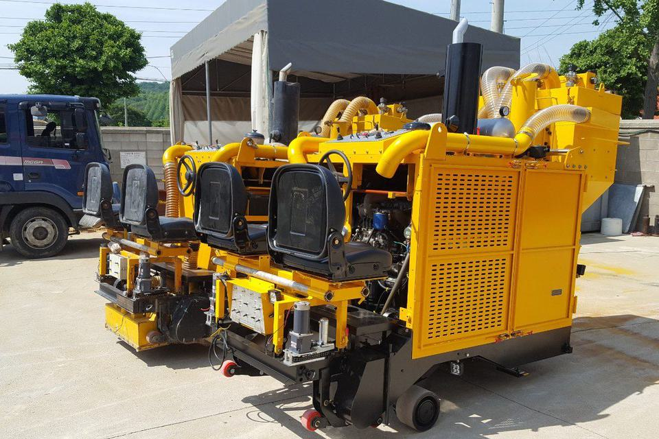
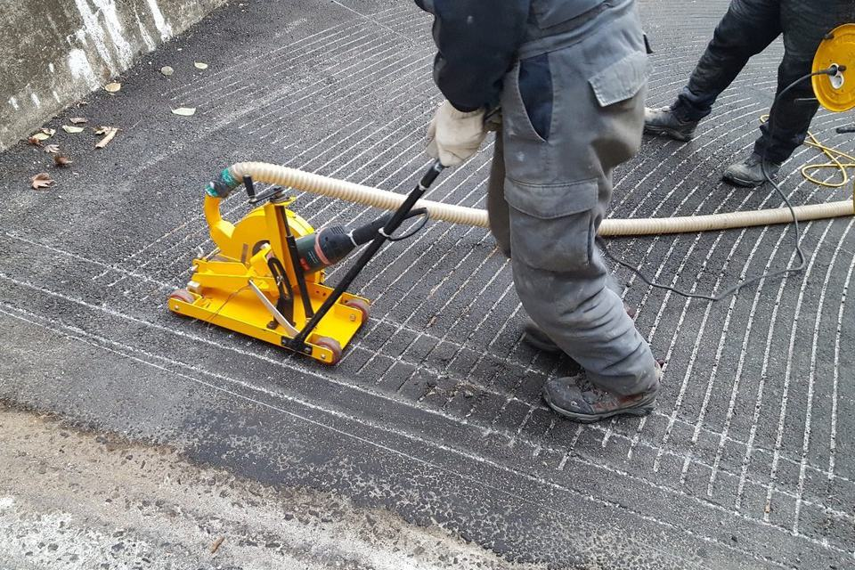
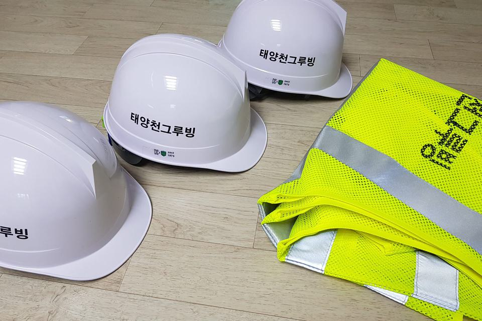
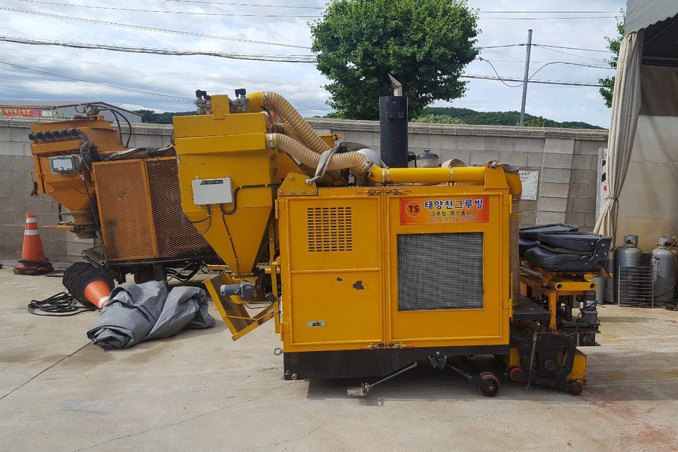

태양천 그루빙 소개
태양천 그루빙은 안전을 최우선으로 생각합니다.
태양천 그루빙은 2017년 10월 설립한 노면 미끄럼 방지 그루빙 전문 업체로, 40년 이상 도로공사에 종사해 온 기술진이 서울·경기부터 지방 현장까지 전국에서 시공합니다.
국내 교통사고 사망자는 2024년 2,521명, 인구 10만 명당 5.3명으로 꾸준히 줄어 왔지만 여전히 OECD 회원국 가운데 중하위권이고, 2025년에는 2,549명으로 다시 늘었습니다. 오랜 기간 도로공사에 종사해 온 회사로서 책임감을 느끼고 그 안전에 집중하기로 했습니다.
현재 대부분의 선진국은 사고가 발생할 수 있는 도로에 필수적으로 그루빙 공법을 적용해서 사고 발생을 예방하고 있습니다. 요새는 많은 분들이 한국에서도 그루빙이 적용된 도로를 많이 보실 수 있으셨을 것입니다. 저희 회사는 이런 안전장치를 도입하는 것이 선진국이 되기 위해 반드시 필요한 일이라고 생각합니다.